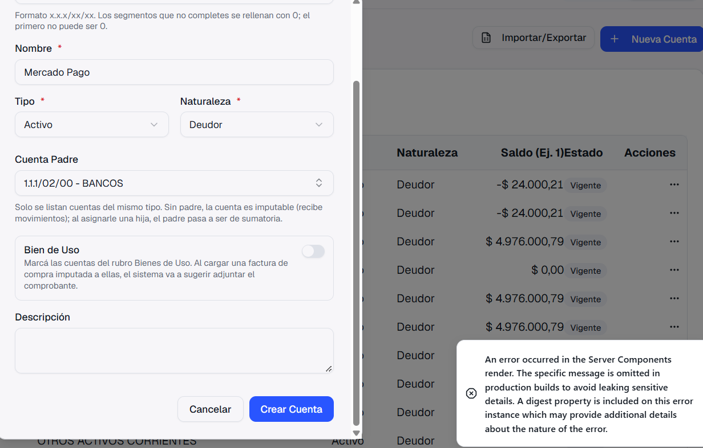
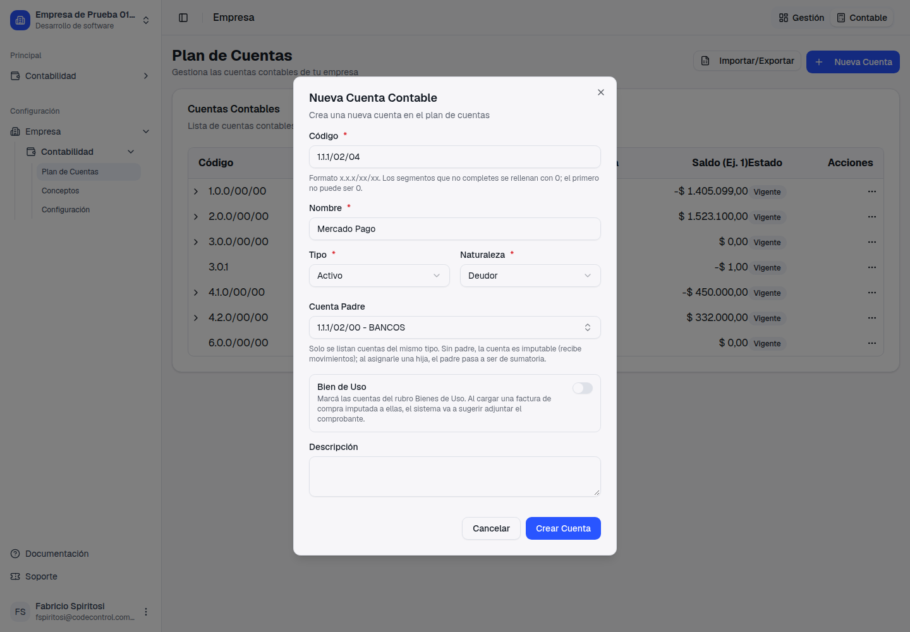
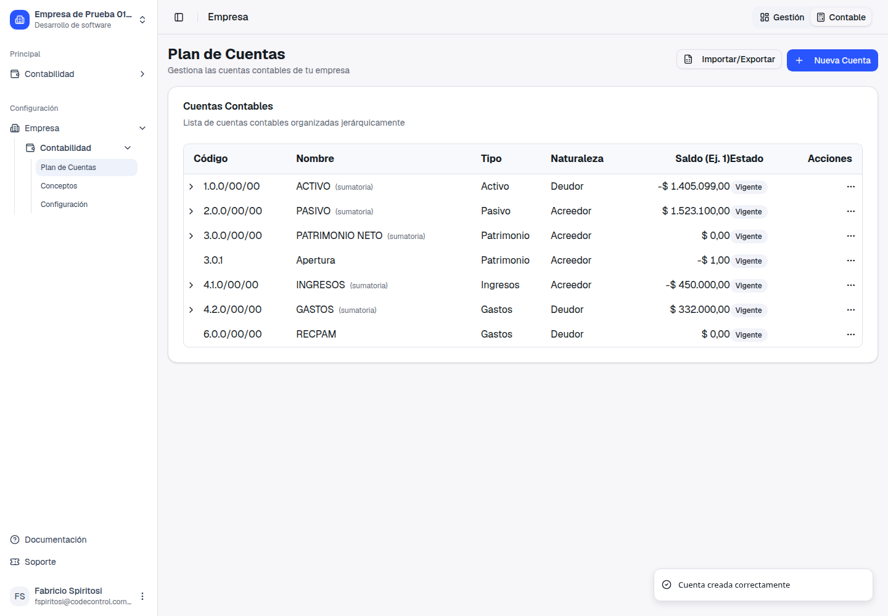
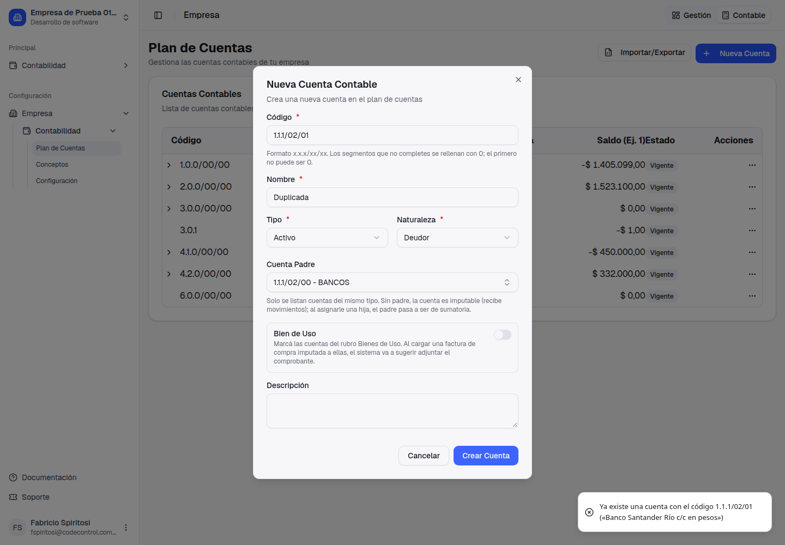

Guía de presentación: qué pasaba, qué cambió y cómo se usa
"No me deja crear una cuenta contable, el número estaría bien porque tomé la siguiente del banco que tenemos." Elizabeth Perez · al crear «Mercado Pago» bajo 1.1.1/02/00 BANCOS
El número elegido era el correcto a la vista: en el plan solo aparecía 1.1.1/02/01 Banco Galicia, así que la siguiente era la 1.1.1/02/02. Pero ese código ya lo tenía «Banco Santander Río c/c en dólares», una cuenta que se había eliminado. Las cuentas eliminadas dejan de verse en el plan, pero su código seguía reservado, y el sistema rechazaba el alta con un error técnico que no explicaba el motivo.
Al guardar aparecía "An error occurred in the Server Components render…", en inglés y sin decir qué pasaba. La cuenta no se creaba y no había forma de saber que el código pertenecía a una cuenta eliminada.
El código de una cuenta eliminada queda libre: la cuenta nueva se crea con ese número. Y cuando algo impide guardar, el aviso dice el motivo en castellano: por ejemplo, qué cuenta ya tiene ese código.



Ahora el aviso siempre explica el motivo. Los casos más comunes:
| Situación | Qué dice el aviso | Qué hacer |
|---|---|---|
| El código lo tiene una cuenta que sigue en el plan | "Ya existe una cuenta con el código 1.1.1/02/01 («Banco Santander Río c/c en pesos»)" | Usar otro código: esa cuenta está en uso. |
| El código es de una cuenta eliminada que todavía figura asignada en algún lado (una cuenta bancaria, una caja, la configuración contable, una categoría de egreso) | "El código … pertenece a la cuenta eliminada «…», que todavía está asignada en: Cuentas bancarias…" | Quitar esa asignación, o usar otro código. |
| La cuenta padre es de otro tipo | "La cuenta padre debe ser del mismo tipo que la cuenta" | Elegir un padre del mismo tipo. |

Lo mismo vale al editar una cuenta y cambiarle el código. Además, cuando se eliminan todas las subcuentas de una cuenta, esa cuenta vuelve a ser imputable. Antes quedaba como sumatoria aunque ya no tuviera hijas visibles.